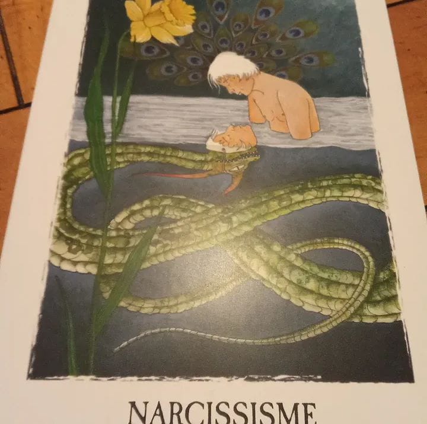

De la blessure à la terre : réparer son narcissisme par la création
Quand la matière devient un espace de reconnaissance, de fierté et de réparation.


Récemment, en tirant une carte de l’Oracle des " Curieux hasards" de Stephen Schellinger, je suis tombée sur celle du « Narcissisme ». L'auteur y explique que nous ne voyons pas la vie telle qu’elle est, mais à travers le filtre déformant de nos blessures. La blessure narcissique, en particulier, vient nous atteindre dans la perception de notre propre valeur.
Elle naît souvent dans l'enfance, lorsque le sermon du « ne pas être assez » est prêché de manière répétée. Pour se protéger de ce sentiment de n'être jamais à la hauteur, on finit par se construire des remparts, des « couches d'oignon » identitaires pour masquer une insuffisance imaginaire.
Narcissisme vs Narcissique : Une distinction nécessaire
Il est essentiel de ne pas confondre les deux termes, car le langage courant a souvent tendance à les mélanger :
Avoir du narcissisme (Sain) : C’est la capacité fondamentale à ressentir sa valeur, à se donner de l’importance et à avoir une image de soi équilibrée. C’est le socle de l’estime de soi qui permet de se sentir digne, même avec ses failles.
Être « Narcissique » (Trouble/Excès) : C’est une personne située dans l'Hyper-narcissisme. Par manque de confiance réelle, elle surcompense en cherchant la toute-puissance, en s’étalant (le flamboyant) ou en écrasant l’autre (le narcissique de combat) pour se sentir exister.
L'anecdote du 2 janvier : Le petit miracle de l'argile
Le 2 janvier dernier, en écho à cette carte d'oracle, j'ai vécu une expérience qui illustre parfaitement cette réparation. Entourée d'amis, je me suis lancée dans le modelage. Pour beaucoup, c'est un loisir banal, mais pour moi, c'était un terrain miné. Le dessin, la peinture ou le modelage ont toujours été des sources de grande anxiété. Enfant, je n'ai jamais été encouragée dans ce sens ; au contraire, la critique et la moquerie sur mes capacités étaient la norme.
J'avais fini par intégrer cette introjection (une phrase « avalée » tout rond sans la discuter) : « J'ai peut-être d'autres talents, mais définitivement pas celui-là ». Mon Je Négatif (mon saboteur intérieur) avait gravé cette impossibilité dans mon identité.
Et pourtant, ce jour-là, sous mes doigts, une figurine a pris forme. Pour la première fois de ma vie, j'ai ressenti une satisfaction profonde, sans aucun jugement. Voir qu'avec le recul et le travail thérapeutique, j'ai pu retrouver cette créativité m'a causé une immense émotion. C’était le signe que ma blessure narcissique était en train de cicatriser.
La créativité : Voie royale vers la fierté ajustée
Pourquoi la création aide-t-elle autant ? Parce que l'art (la musique, le trait, la terre) court-circuite le mental — ce petit vélo qui veut tout contrôler — pour parler directement au corps et aux émotions.
En Gestalt-thérapie, nous travaillons sur la fierté ajustée. La fierté n'est pas une émotion que l'on peut métaboliser seule : elle a besoin d'avoir été vue dans le regard de l'autre (souvent le père) pour être intégrée. Lorsque ce regard a manqué ou a été moqueur, la médiation artistique permet de recréer cet espace de reconnaissance.
C’est ce processus que je propose dans mes ateliers collectifs « En Scène ! » ou lors des médiations artistiques en séances individuelles. En co-créant une œuvre ou un geste, on transforme la relation d’aide en un espace de fierté retrouvée et de dignité. On apprend à ne plus être une « barque au milieu de la mer » soumise aux courants des critiques passées, mais à redevenir le capitaine de son propre navire.
Si vous aussi, vous sentez que votre « Je Négatif » utilise un mégaphone trop puissant pour vous dire que vous n'êtes pas capable, sachez que la créativité peut être votre alliée pour redonner de la voix à votre Je Positif.
La médiation artistique peut devenir un espace où la création, la reconnaissance et la relation permettent de retrouver une fierté plus ajustée.